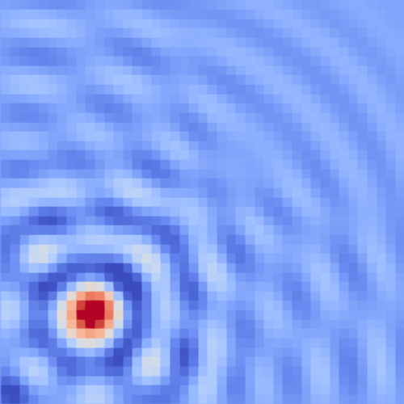
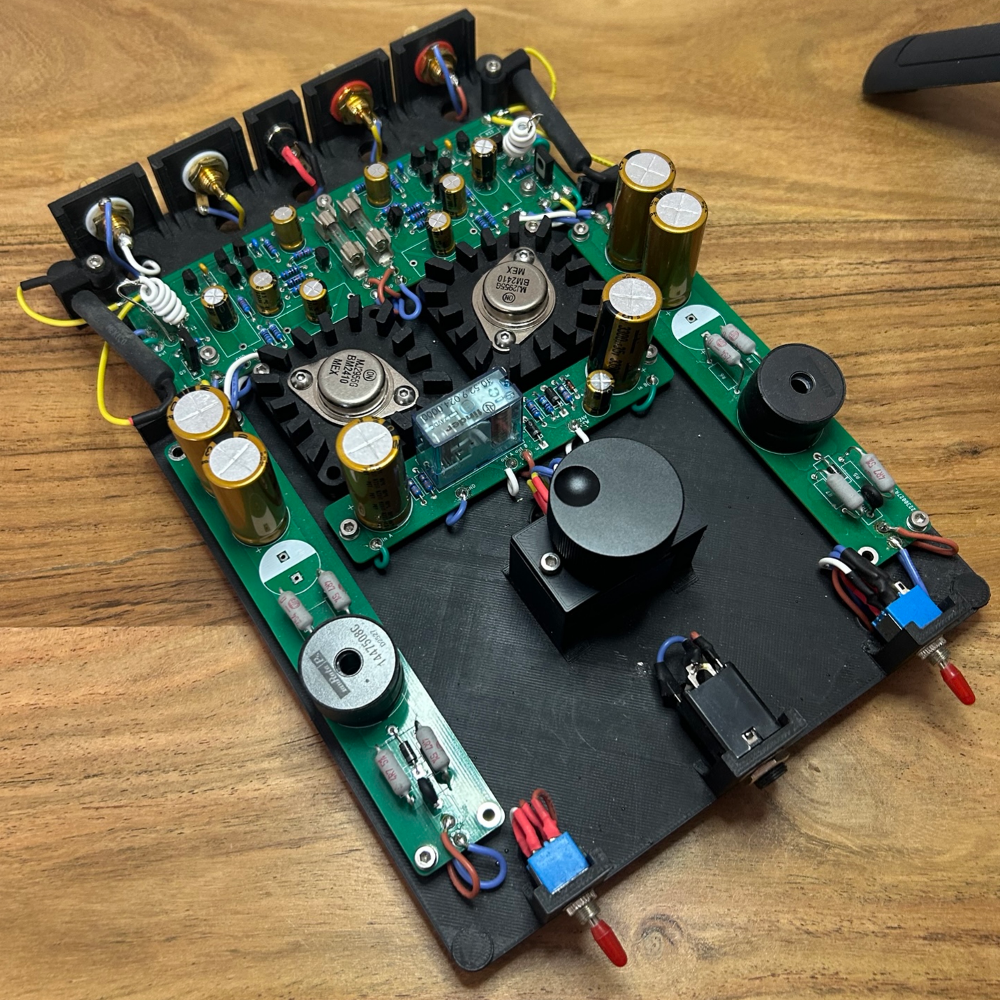
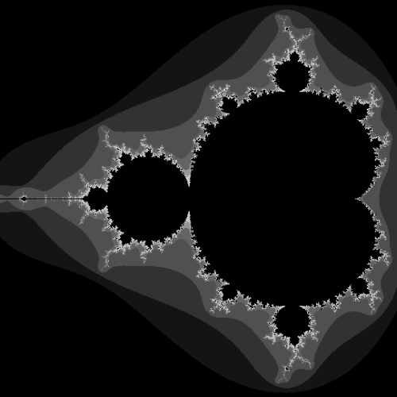

Maxwell's equations solver
A finite difference time domain (FDTD) solver for Maxwell's equations written from scratch. The solver uses a cubic grid following Yee's method for staggering the field quantities. It is fully implemented in Python for easy prototyping.
Project repository
Simple, fully discrete class A headphone amplifier
A headphone amplifier designed from scratch to be fully discrete and as simple as possibile while keeping excellent audio quality. It uses a resistor-coupled output stage with a fully discrete pre-amplifier. The output is capacitively coupled, so a single voltage supply can be used. The power supply is fully passive and executed as a LC network. A 3D printed case-design was chosen for the prototype.
Project repository
Visualizer for the Mandelbrot set
A simple Javascript / html renderer for Mandelbrot's set. It can be modified easily to render different sections of the set at different resolutions.
Project repository